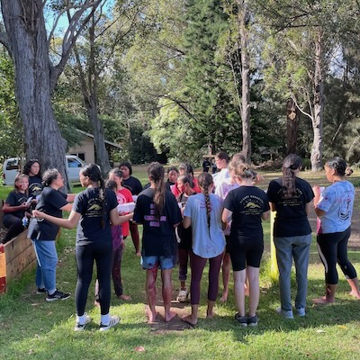

"Jesus increased in wisdom and stature, and in favor with God and man." - John 2:52
Activity Ideas
Jesus grew in "widom" (intellectually), "stature" (physically), in favor with God (spiritually), and man (socially). We want to become as Jesus. The following table contains some activity ideas in each of the four categories: intellectual, physical, spiritual, and social.
| Intellectual | Physical | Spiritual | Social |
| Learn to make different kinds of food | Sports: basketball, dodgeball, volleyball, etc | Temple Baptisms | Heart Attack Service |
| Learn a trade/skill | Service Project | Family Search Bingo | S'mores on Beach |
| Life-skills/Mission Obstacle Course | Go on a hike | Trust Walk | Game night |
| Escape Room | Life-size Board games: hungry hippos, clue, battleship | Scripture themed pictionary, cake wars, charades, etc. | Ward/Youth Dance |
| Culture/Mission night | Beach Activities: sand sculpting, sand volleyball, spike ball, etc | Service Scavenger Hunt | Etiquette Dinner |